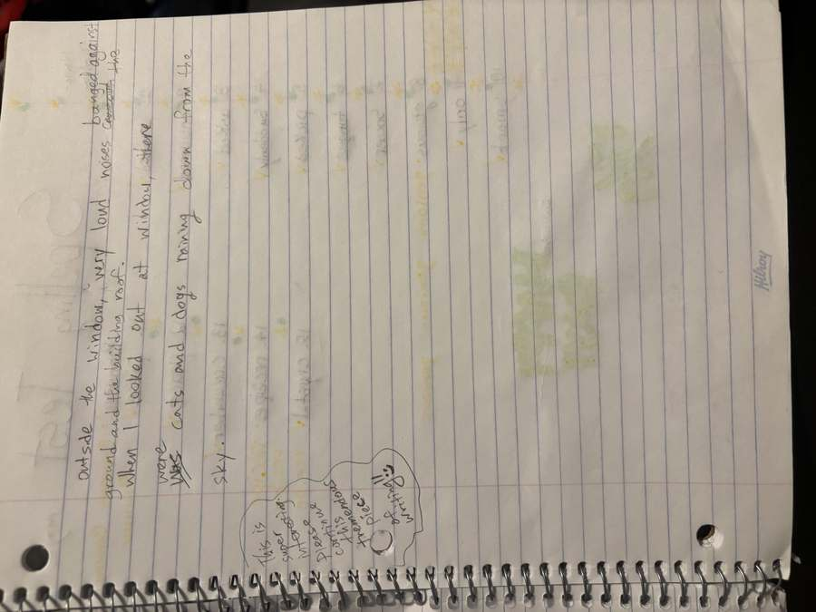
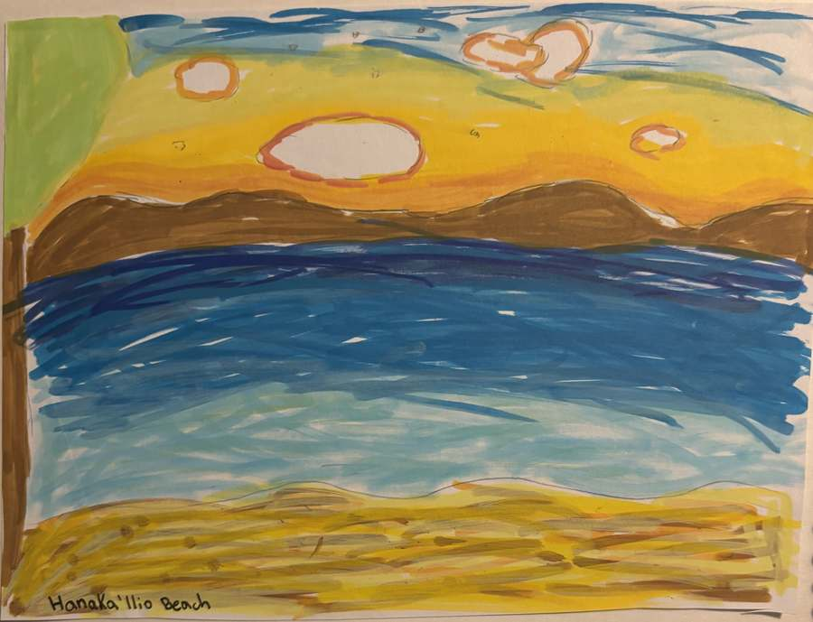
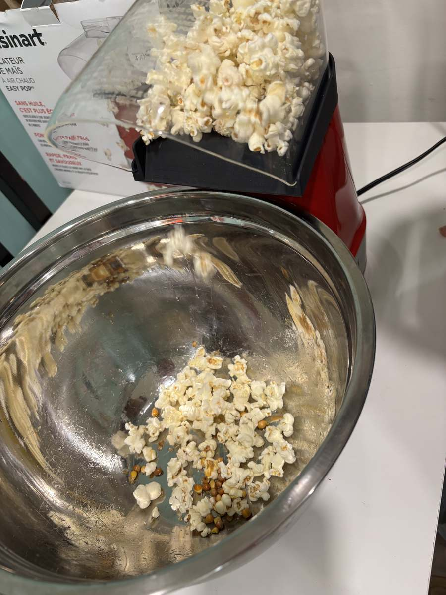
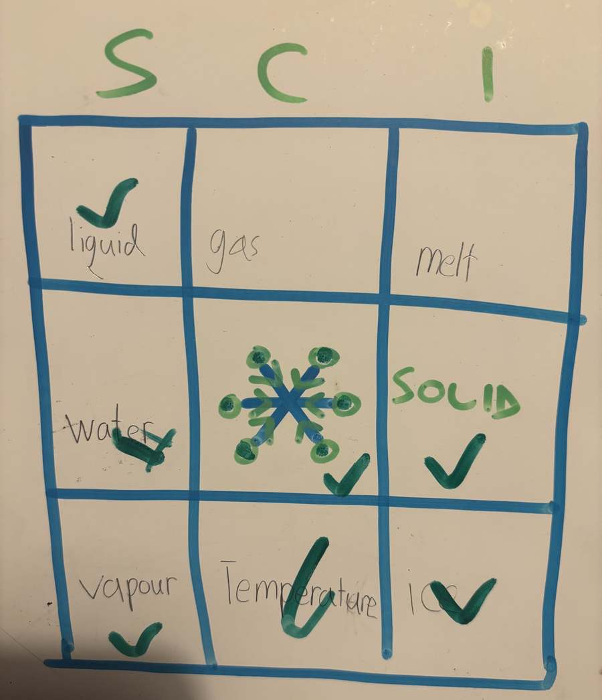
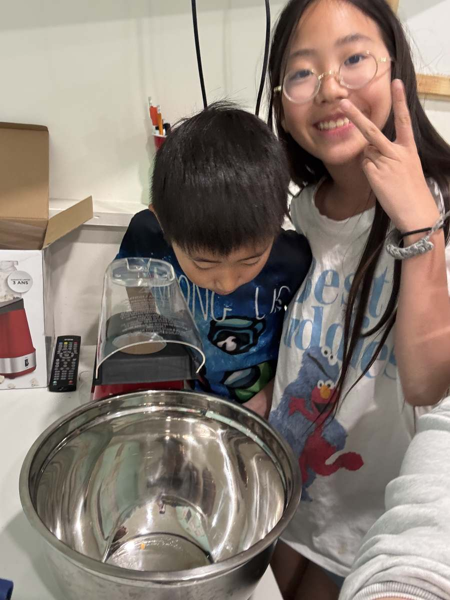
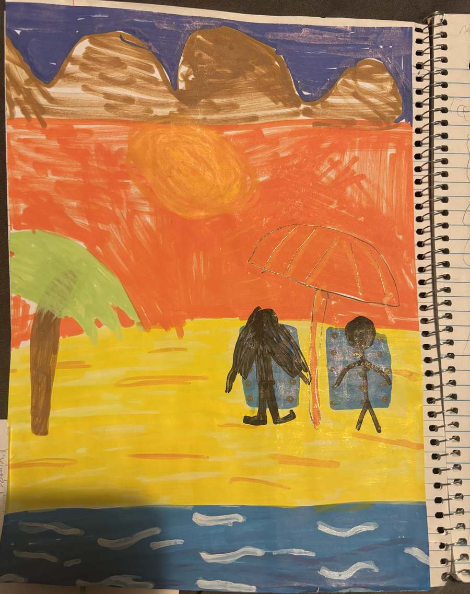

In Class — Creative Writing, Popcorn Science & Friday Bible
The writing we are doing in class incorporates the concepts of verb tenses, plot, common idioms, quotations, paragraph divisions, vocabulary and spelling building in areas of student interests, creative writing ✍️ skills, and practice attending to edits. It will be in subsequent steps that the students will work on re-drafting and polishing their work to be more presentable, clear, and with fewer technical errors.


Additionally, today we related three scientific concepts to the healthful activity of popping fresh popcorn. These were concepts about matter being more or less dense with the addition of heat; matter taking on different forms in different states depending on temperature; the temperature causing a change of state varying between different substances; and exactly what density means from one state to the next.



Our Friday Bible Lesson today continued our reading from the Gospel of John. The first three chapters lead straight into some essential Christian concepts: Jesus being God (the Trinity of Father, Son, and Holy Spirit, as One), the symbolism of baptism, the essential human need for being “born again,” the power of a word, and our freedom to pray. We barely touched the surface, so please explore these concepts further with your families, as you see fit or according to your interest. 🙏
Have a blessed and lovely weekend, everyone. TGIF — Thank goodness it’s Friday 💕💕💕
